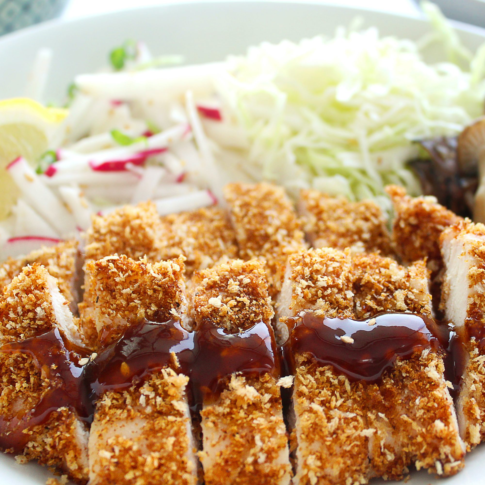

Chicken Katsu

Description
Chicken katsu (Japanese chicken schnitzel or chicken cutlet) is usually served with the sweet and savory tonkatsu sauce, finely shredded cabbage and cucumbers. You can eat it either with steamed rice, ramen or prepared chicken katsu don.
It is a comfort food widely popular in Japan. It is straightforward to prepare, and the main ingredients are common to most palates.
Ingredients
- 4 skinless, boneless chicken breasts halves - pounded to 1/2 inch thickness
- salt and pepper to taste
- 2 tablespoons all-purpose flour
- 1 egg, beaten
- 1 cup panko bread crumbs
- 1 cup for frying, or as needed
Steps
- Season the chicken breasts on both sides with salt and pepper. Place the flour, egg and panko crumbs into separate shallow dishes. Coat the chicken breasts in flour, shaking off any excess. Dip them into the egg, and then press into the panko crumbs until well coated on both sides.
- Heat 1/4 inch of oil in a large skillet over medium-high heat. Place chicken in the hot oil, and cook 3 or 4 minutes per side, or until golden brown.